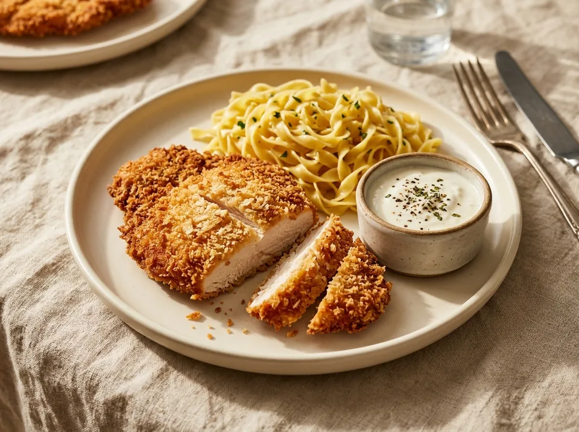

Основные блюда · 26 минут
Шницель с хрустящей корочкой (3 в 1)
Рубленый куриный шницель с хрустящей корочкой в аэрогриле без масла (по схеме 15 + 11 минут с надрезом), густой белковый соус из мягкого творога «Савушкин» 0,1% с соевым соусом и чесноком и домашняя яичная лапша «Роллтон». Полный сет и отдельные расчёты КБЖУ для каждого компонента.
К ингредиентам
Ингредиенты · 4 порций
- 1. Шницели в аэрогриле (упаковка 480 г)
- Шницель куриный с хрустящей корочкой «Троекурово» рубленый из филе грудки (192,2 ккал | Б 13,8 | Ж 6,6 | У 7,0) — 480 г (1 упаковка)
- 2. Гарнир (на 3–4 порции)
- Яичная лапша «Роллтон» в сухом виде (298 ккал | Б 10,4 | Ж 2,0 | У 59,2) — 280 г (~670 г в отварном виде)
- 3. Чесночно-соевый ПП-соус (~77 г)
- Творог мягкий «Савушкин» 0,1% — 62,5 г (полбанки 125 г)
- Соевый соус классический — 10 г (около 2 ч. л. / 1 десертная ложка)
- Чеснок свежий — 4 г (3–5 г · 1–2 средних зубчика)
- Травы сушёные ароматные — по желанию
- Перец чёрный свежемолотый — по желанию
Пищевая ценность
На 100 г: 156 ккал · Б 8.9 г · Ж 3.2 г · У 17.6 г
Шаг за шагом
Первый запуск аэрогриля: 15 минут с переворотом
Выложите охлаждённые рубленые куриные шницели (упаковка 480 г) на решётку аэрогриля без добавления масла. Запустите аэрогриль на 15 минут. В процессе первого цикла один раз переверните шницели (примерно на 7–8-й минуте), чтобы панировка равномерно схватилась с обеих сторон.
Переворот, надрез на шницеле и второй запуск: 11 минут (7 + 4 мин)
После завершения первых 15 минут снова переверните шницели и сделайте на каждом небольшой надрез ножом — это выпустит лишний пар изнутри и сделает панировку по-настоящему хрустящей. Включите второй запуск аэрогриля на 11 минут: когда пройдёт 7 минут, переверните шницели ещё раз и держите финальные 4 минуты до румяной хрустящей корочки.
Варка яичной лапши «Роллтон» (280 г сухой)
Параллельно со вторым запуском аэрогриля вскипятите подсоленную воду, опустите 280 г сухой яичной лапши «Роллтон» (около 2/3 пачки 400 г) и варите 5 минут до упругой текстуры. Откиньте на дуршлаг — получится около 670 г готовой рассыпчатой лапши на 3–4 порции.
Приготовление чесночно-соевого ПП-соуса за 2 минуты
Пока готовится горячее, смешайте в соуснике 62,5 г мягкого творога «Савушкин» 0,1% (ровно полбанки), 10 г соевого соуса (2 ч. л. / 1 десертная ложка), измельчённый через пресс чеснок (3–5 г, 1–2 зубчика), сушёные травы и чёрный перец по вкусу. Подавайте горячие хрустящие шницели с яичной лапшой и холодным густым соусом.
Другие варианты
2. Шницели в аэрогриле (480 г) + чесночно-соевый соус (без лапши)
- Шницель куриный с хрустящей корочкой «Троекурово» рубленый из филе грудки — 480 г (1 упаковка)
- Творог мягкий «Савушкин» 0,1% — 62,5 г (полбанки)
- Соевый соус классический — 10 г (2 ч. л. / 1 дес. ложка)
- Чеснок свежий — 4 г (3–5 г · 1–2 зубчика)
- Травы сушёные и чёрный перец — по желанию
3. Только чесночно-соевый ПП-соус «Савушкин» 0,1% (отдельный КБЖУ)
- Творог мягкий «Савушкин» 0,1% — 62,5 г (полбанки)
- Соевый соус классический — 10 г (около 2 ч. л. / 1 десертная ложка)
- Чеснок свежий — 4 г (3–5 г · 1–2 средних зубчика)
- Травы сушёные — по желанию
- Перец чёрный молотый — по желанию
4. Только отварная яичная лапша «Роллтон» (280 г сухой на 4 порции)
- Яичная лапша «Роллтон» (из пачки 400 г) — 280 г сухой (~670 г отварной)
- Вода питьевая для варки — 2000 мл
- Соль — по вкусу